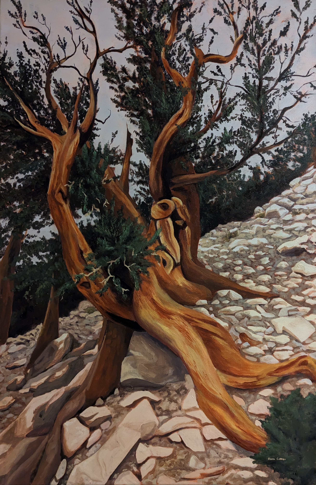
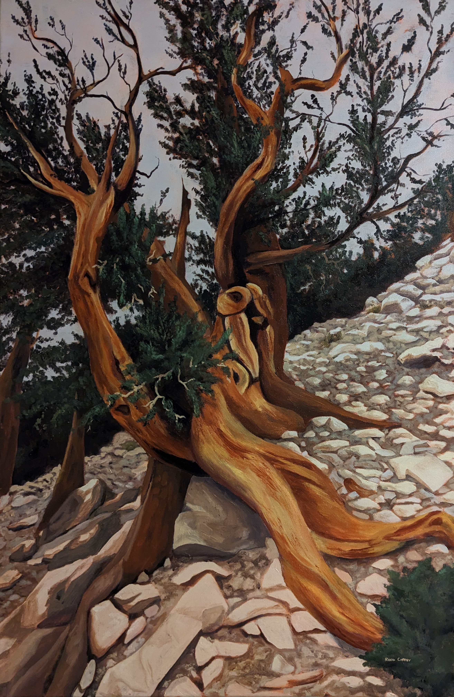
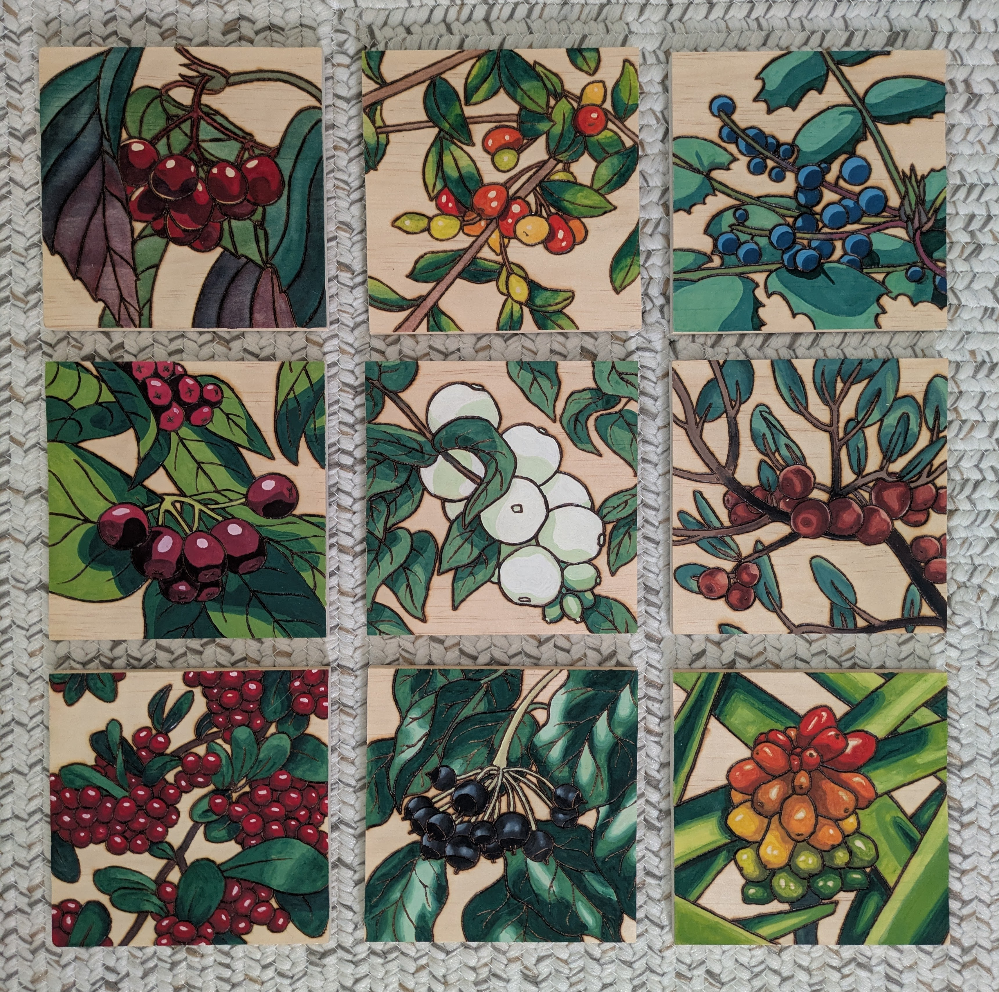
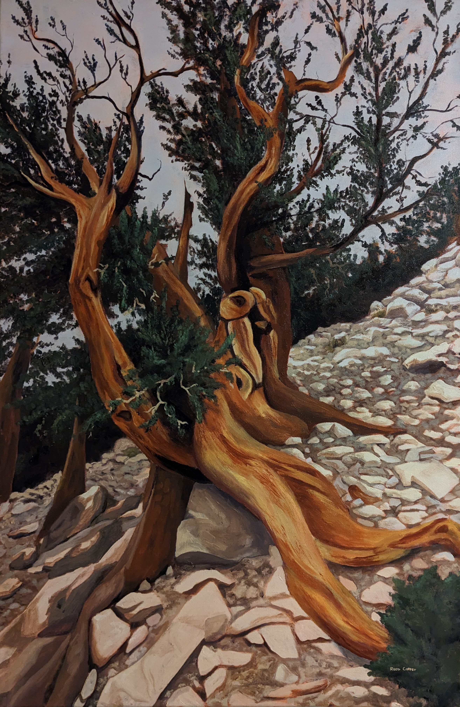

Morphology is Reed's first large pyrography project. Wood and watercolor come together to depict a variety of berries, drawing attention to the myriad of ways similar structures can express themselves.


Morphology is Reed's first large pyrography project. Wood and watercolor come together to depict a variety of berries, drawing attention to the myriad of ways similar structures can express themselves.
Reed Coffey is a visual artist based in Tucson, Arizona. Born in Washington state, they began painting at age twelve. Rooted in their childhood in the Pacific Northwest and shaped by a career in conservation, Reed’s oil paintings highlight the hidden details of the natural world. Their work captures the the quiet joy of discovery- rounding the corner of a trail to a breathtaking view, lifting a leaf to reveal a cluster of berries, or the visual rhythms present for those who take the time to observe them.
Morphology is Reed's first major pyrography project. Wood and watercolor come together to depict a variety of berries, drawing attention to the myriad of ways similar structures can express themselves.